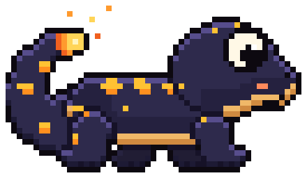

01
Bring your own files.
Start with an already extracted ExeFS and RomFS from your own game dump, or a homebrew .nro. Kiln’s work begins after extraction.
A new home for your game code. Kiln compiles Nintendo Switch programs into native executables for your computer.

Early days. Real progress. Kiln is experimental; compatibility varies by title.
Read the development reportsKiln reads the game’s AArch64 code before it runs, turning it into native x86-64 code. Its runtime provides the Horizon OS services that code expects.
Start with an already extracted ExeFS and RomFS from your own game dump, or a homebrew .nro. Kiln’s work begins after extraction.
Recompile in the desktop app or command line. Kiln lifts AArch64 instructions to LLVM IR and compiles the result with clang.
Launch the native executable. Kiln’s runtime handles the console services, with Vulkan for rendering and keyboard input for controls.
Prefer a window? The desktop app lets you pick a folder, recompile, and keep your outputs and settings in a library.
Prefer a terminal? The same compiler is ready for your commands. Start with kiln doctor to check your toolchain.
Windows and Linux bundles. Clang is installed separately.
# PowerShell · extracted files in .\game
kiln doctor
kiln build --exefs .\game\exefs --romfs .\game\romfs --out .\out --name game
$env:NX_RENDERER = "vulkan"
$env:NX_WINDOW = "1"
.\out\game.exe# Bash · extracted files in ./game
kiln doctor
kiln build --exefs ./game/exefs --romfs ./game/romfs --out ./out --name game
NX_RENDERER=vulkan NX_WINDOW=1 ./out/gameThe compiler, Horizon runtime, shader translation and Vulkan backend are in place. Current reports document first screens, an opening cutscene and a first area from one title on Windows.
There’s more to do. The milestone reports record what was tested and what remains unverified, so you can follow the work as it happens.
Follow the developmentLinux builds and synthetic tests are available; running a game on Linux remains unverified. Kiln includes no game data, keys or firmware.